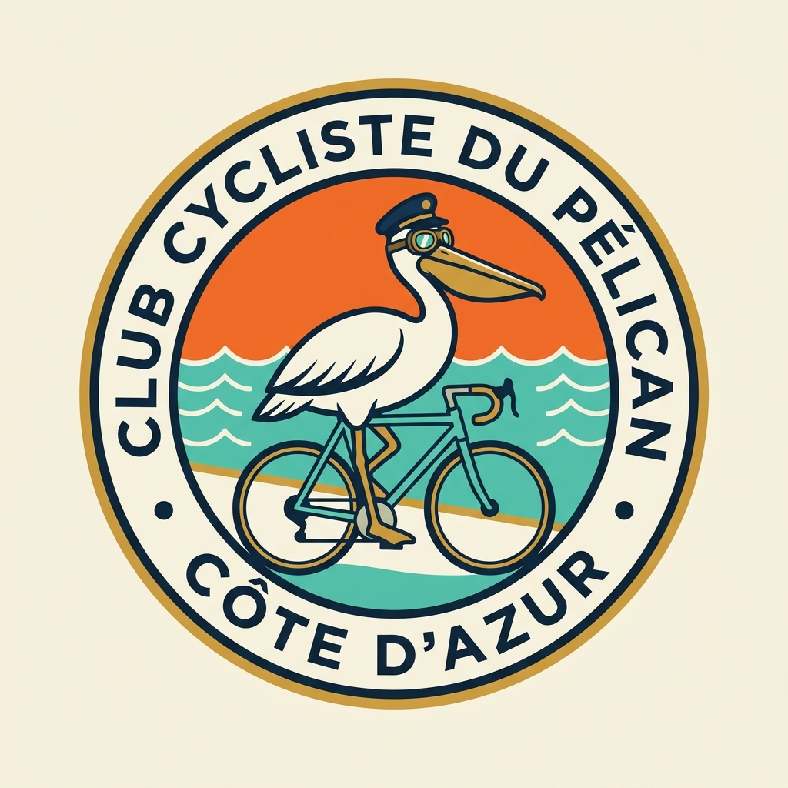

Club Cycliste du Pélican · Côte d'Azur
Le Grand Prix du Pélican
正在装配复古钢架传动链条与双骨逆运动学骨骼…
DOSSARD 07
AUTOPILOT · 领骑巡航
Capitaine Archibald
2-Bone IK 双骨解算 · 48 节动态链条 · GLSL 海浪与合成声学
VITESSE
24.8
km/h
CADENCE
78
rpm
DISTANCE
0.00
km
SARDINES
🐟
2
RENDER
60
fps
🔇
开启海浪与车铃声
📷 明信片快照
🔧 机械与骨骼检视
👁 纯净观景
Carte Postale · 蔚蓝海岸骑行纪念明信片
✕ 关闭
已合成实时 WebGL 画面、赛会徽章邮戳与瞬时遥测数据
⬇ 下载高清 PNG 明信片